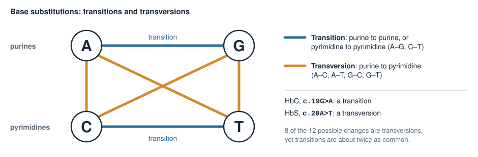
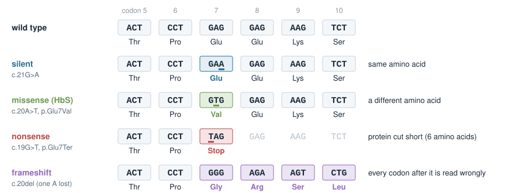
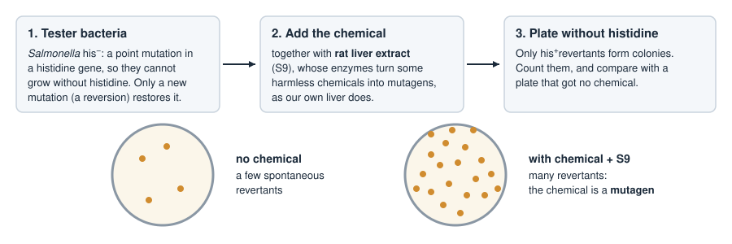
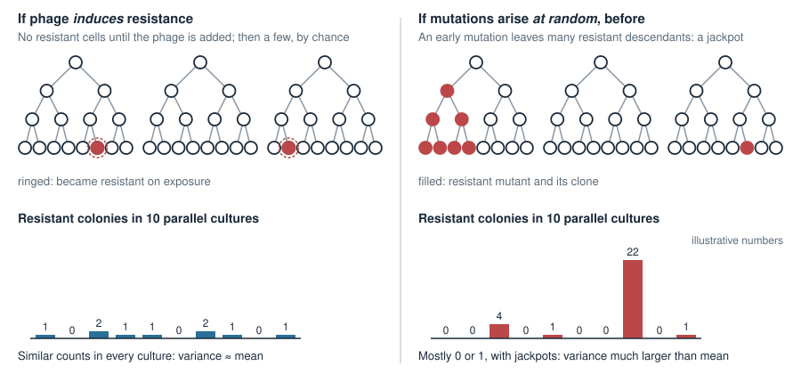
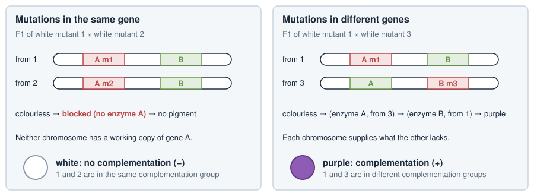
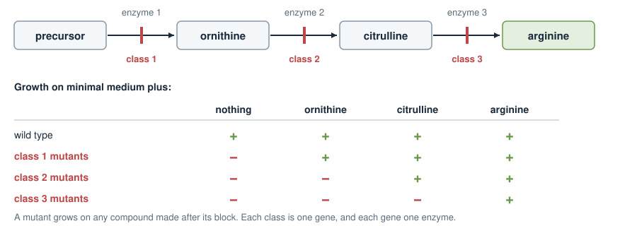

Part 3: DNA, mutation & gene function. How genes change, how we know mutation is random, and how to count genes with mutants
Basic and molecular genetics (5MO104)
About this lecture
Every allele you met in Parts 1 and 2 (wrinkled, white, HbS, the cystic fibrosis allele) began as a mutation: a heritable change in the DNA sequence. Mutations are the raw material of evolution, the cause of genetic disease, and the geneticist’s main tool: we learn what a gene does by breaking it.
Kinds of mutation: transitions and transversions; silent, missense, nonsense and frameshift.
Where mutations come from: spontaneous errors and damage, and induced mutation by mutagens. The Ames test.
Mutations are random: the Luria–Delbrück fluctuation test.
DNA repair, in brief.
Loss- and gain-of-function alleles, and what they mean for dominance.
The complementation test: are two mutations in the same gene?
One gene, one enzyme: Beadle and Tatum.
Book: Hartwell, Genetics: From Genes to Genomes, Anatomy and function of a gene: dissection through mutation chapter.
Mutation: the raw material and the tool
Mutation
a heritable change in the DNA sequence
Germline mutation
in a cell that makes gametes: passed on to offspring
Somatic mutation
in a body cell: passed on to that cell’s descendants only (cancer, Part 7)
Wild type
the common, “standard” allele in a population (A, +)
Forward mutation
wild type → mutant
Reverse mutation (reversion)
mutant → wild type again
How often? In humans about 1 new point mutation per 108 base pairs per generation. With 3 × 109 base pairs in each genome copy, every child carries some 50–100 new point mutations that neither parent had. Most fall outside genes and do nothing.
Kinds of point mutation

Substitution: one base replaced by another. A transition keeps the class of base (purine for purine, pyrimidine for pyrimidine); a transversion swaps the class.
Insertion or deletion (indel) of one or more bases.
Larger changes (deletions of whole genes, inversions, translocations) are Part 5.
What a point mutation does to a protein

Silent (synonymous): same amino acid, usually at the third codon position. Missense: another amino acid (HbS, HbC). Nonsense: a stop codon, so a short protein (CFTR p.Gly542Ter, HBB p.Gln40Ter). Frameshift: an indel that is not a multiple of 3 changes every codon downstream, usually until a stop codon appears.
Where do mutations come from? Spontaneous
Even without any mutagen, DNA changes all the time:
Source
What happens
Typical result
Replication errors
wrong base inserted, not caught by proofreading or mismatch repair
substitutions; slippage in repeats gives small indels
Depurination
a purine base falls off the sugar, leaving a gap in the code
any base inserted opposite: substitutions
Deamination
C loses an amino group and becomes U
C→T transitions
Methyl-C deamination
5-methylcytosine becomes T, a normal DNA base, so repair cannot spot it
C→T at CpG sites: mutation hotspots
Oxidative damage
guanine is oxidised to 8-oxoG, which pairs with A
G→T transversions
Spontaneous does not mean “without a cause”: it means caused by the cell’s own chemistry and copying, not by an outside agent.
Induced mutation: mutagens
A mutagen raises the mutation rate above the spontaneous rate. Geneticists use them on purpose to make mutants.
Mutagen
How it acts
Typical mutation
Base analogues (5-bromouracil)
built into DNA in place of T; mispairs with G
transitions
Alkylating agents (EMS)
add an ethyl group to G; the altered G pairs with T
G:C → A:T transitions
Intercalators (proflavin, acridines)
slip between stacked bases; the polymerase adds or skips a base
frameshifts (+1, −1)
UV light
joins adjacent pyrimidines into dimers
C→T at dipyrimidines; error-prone bypass
Ionising radiation (X-rays)
breaks the backbone, often both strands
deletions, rearrangements
Muller (1927) showed that X-rays raise the mutation rate in Drosophila by many-fold: the first induced mutations.
The Ames test: is this chemical a mutagen?

Counts reversions of a known his− point mutation, so it detects rare events among billions of cells.
Different tester strains carry different his− mutations (a base substitution, a frameshift), so the test also says what kind of mutation a chemical causes.
Most known carcinogens are mutagens in the Ames test: cancer is caused by somatic mutation (Part 7).
Are mutations random, or a response?
The question in 1943: when E. coli is exposed to phage T1, a few colonies of resistant bacteria grow. Did the phage cause resistance in some cells (an adaptive response), or were resistant mutants already there, by chance?
Luria and Delbrück’s idea: grow many small parallel cultures, each from a few cells, and plate each whole culture on phage.
If phage induces resistance: every culture has the same chance per cell, so the number of resistant colonies per culture varies little (variance ≈ mean, as for a Poisson distribution).
If resistance arises at random, before exposure: a mutation early in growth leaves a large clone of resistant cells (a jackpot), a late one leaves only one or two. The counts fluctuate wildly between cultures (variance ≫ mean).
The fluctuation test: the result

Luria and Delbrück saw jackpots: most cultures had few or no resistant cells, and a few had very many. Samples from one large culture, by contrast, varied little. Resistance mutations arise at random, before selection: the phage only selects them.
Replica plating (Lederberg and Lederberg, 1952) showed the same thing directly: resistant colonies could be found on a master plate that had never seen phage.
DNA repair, in brief
Damage and mismatches are fixed before they become mutations, mostly by cutting out the bad strand and copying the good one.
Repair system
Fixes
When it fails (humans)
Proofreading by DNA polymerase
wrong base just inserted
mutator phenotype
Mismatch repair
mismatches left after replication
Lynch syndrome: inherited colon cancer risk
Base excision repair
single damaged bases (U, 8-oxoG, lost bases)
Nucleotide excision repair
bulky lesions, UV dimers
xeroderma pigmentosum: extreme sun sensitivity, skin cancer
Homologous recombination
double-strand breaks, using the sister chromatid
BRCA1, BRCA2: breast and ovarian cancer risk
Non-homologous end joining
double-strand breaks, by joining ends directly
often leaves small deletions
The genetic lens: most repair genes were found as mutators or as mutagen-sensitive mutants, and many are tumour suppressors.
Loss of function, gain of function
What a mutation does to the gene product explains whether the allele is dominant or recessive (Part 1):
Kind of allele
Effect on the gene product
Usually
Null (amorph)
no function
recessive: one working copy is enough
Hypomorph
reduced function
recessive
Haploinsufficient gene, loss of function
half the product is not enough
dominant
Dominant negative (antimorph)
a faulty subunit spoils the normal ones (collagen in osteogenesis imperfecta)
dominant
Gain of function (hypermorph, neomorph)
too much, always-on, or a new activity (FGFR3 in achondroplasia)
dominant
Most mutations in most genes are recessive loss-of-function alleles: the cell’s pathways have spare capacity. That is why the complementation test works.
The complementation test
You have two recessive mutants with the same phenotype, say white flowers. Are the mutations in the same gene or in different genes? Cross them and look at the F1:

F1wild type: the mutations complement: they are in different genes.
F1mutant: they fail to complement: they are in the same gene.
Complementation groups
Five white-flowered mutants, crossed in all pairs (invented data):
1
2
3
4
5
1
−
+
−
+
+
2
−
+
−
+
3
−
+
+
4
−
+
5
−
Reading the table:
1 and 3 fail to complement → same gene.
2 and 4 fail to complement → same gene.
5 complements everyone → a gene of its own.
Three complementation groups: {1, 3}, {2, 4}, {5}. So at least three genes are needed to make purple flowers.
A complementation group = a set of mutations that fail to complement each other = one gene.
Try it: sorting mutants into genes
One gene, one enzyme
Beadle and Tatum (1941) irradiated the mould Neurospora crassa and kept mutants that could no longer grow on minimal medium (auxotrophs). Feeding them single compounds showed where each was blocked. Srb and Horowitz (1944) used the method on mutants that need arginine:

The three classes were three complementation groups, so three genes, each needed for one step of the pathway, that is, one enzyme: the one gene–one enzyme hypothesis. Today: one gene–one polypeptide (or one functional RNA).
Mutations in the databases
Every human variant in this lecture has a record you can look up:
Allele
HGVS name (transcript)
Effect
dbSNP
HbS
NM_000518.5(HBB):c.20A>T (p.Glu7Val)
missense
rs334
HbC
NM_000518.4(HBB):c.19G>A (p.Glu7Lys)
missense
rs33930165
β0-thalassaemia, codon 39
NM_000518.5(HBB):c.118C>T (p.Gln40Ter)
nonsense
rs11549407
Cystic fibrosis G542X
NM_000492.4(CFTR):c.1624G>T (p.Gly542Ter)
nonsense
rs113993959
HGVS names count the start methionine as amino acid 1, so the classic Glu6Val is p.Glu7Val in databases. The p. part tells you the type: one amino acid for another (missense), Ter (nonsense), fs (frameshift).
Summary
Concept
Key fact
Point mutations
transitions (purine↔︎purine, pyrimidine↔︎pyrimidine) and transversions; indels
base analogues and EMS (transitions), intercalators (frameshifts), UV (dimers), X-rays (breaks)
Ames test
reversion of his−Salmonella, with liver extract; detects mutagens, most carcinogens
Fluctuation test
jackpots, variance ≫ mean: mutations arise at random, before selection
Repair
proofreading, mismatch, base and nucleotide excision, recombination, end joining
Loss vs gain of function
null alleles usually recessive; haploinsufficiency, dominant negatives, gain of function dominant
Complementation
recessive mutants: F1 wild type = different genes; mutant = same gene
One gene–one enzyme
auxotroph classes ordered by which compounds rescue them
Where this leads
Next: Gene expression (recap). How a mutation’s effect depends on where it falls: in a promoter, a splice site, a UTR or a codon; and how frameshift mutants proved the code is read in triplets.
Exercise in R: a genetic-code table as a named vector; translate HBB and classify every possible point mutation.
Part 4: Genomic variation. Point mutations that became common in a population are SNPs.
Part 7: Cancer genetics. Somatic mutations, mutagens and failed repair; Knudson’s two hits.